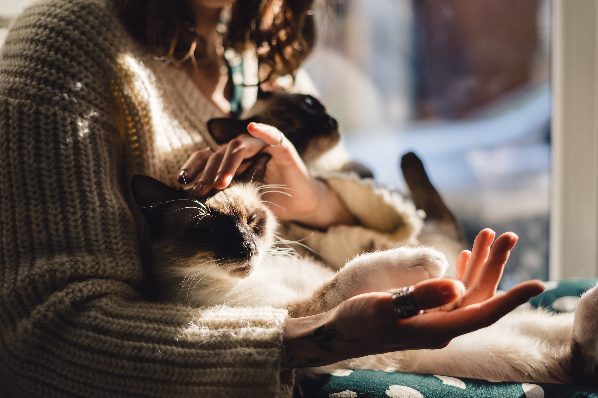

Gatos
Atender gatos exige mais do que carinho — requer técnica, paciência
e compreensão do seu comportamento único. Diferente dos cães, os
felinos são mais sensíveis ao ambiente, ao toque e às mudanças na
rotina. Por isso, um atendimento especializado é essencial. Desde o
manejo silencioso até o uso de equipamentos específicos e espaços
adaptados, tudo precisa ser pensado para garantir conforto,
segurança e bem-estar. Profissionais capacitados entendem os sinais
corporais do gato, evitam estresse desnecessário e promovem uma
experiência tranquila tanto para o animal quanto para o tutor.
Atendimento felino especializado não é um luxo — é o cuidado
responsável que todo gato merece.

Cães
Atender cães de forma especializada vai além do básico: é
compreender as particularidades de cada raça, porte e temperamento.
Cães reagem de formas diferentes ao toque, ao ambiente e às pessoas
— por isso, o atendimento deve ser adaptado com precisão. Técnicas
de manejo calmo, comunicação corporal adequada e um espaço que
transmita segurança fazem toda a diferença. Um profissional
especializado sabe identificar sinais de estresse, dor ou ansiedade
e age com respeito e precisão. O resultado é um cuidado mais
eficiente, humanizado e seguro, que reforça o vínculo entre o cão e
quem cuida dele. Atendimento especializado é o padrão mínimo para
quem leva o bem-estar animal a sério.
Hamster
Atender hamsters de forma especializada exige conhecimento técnico e
extremo cuidado. São animais frágeis, pequenos e com alta
sensibilidade ao toque, ao som e à manipulação. Qualquer atendimento
precisa ser rápido, silencioso e preciso, evitando estresse ou risco
físico. Um profissional qualificado sabe como conter, examinar e
interagir com o animal sem causar desconforto ou medo. Além disso, é
fundamental entender suas necessidades específicas de higiene,
ambiente e alimentação. Hamsters não são miniaturas de outros pets —
exigem um protocolo próprio, delicado e atento. Atendimento
especializado é o que garante a saúde e a longevidade desses
pequenos animais. O ambiente deve ser calmo, sem ruídos ou estímulos
excessivos. Cada ação precisa ser planejada para reduzir ao máximo
qualquer fator de estresse.